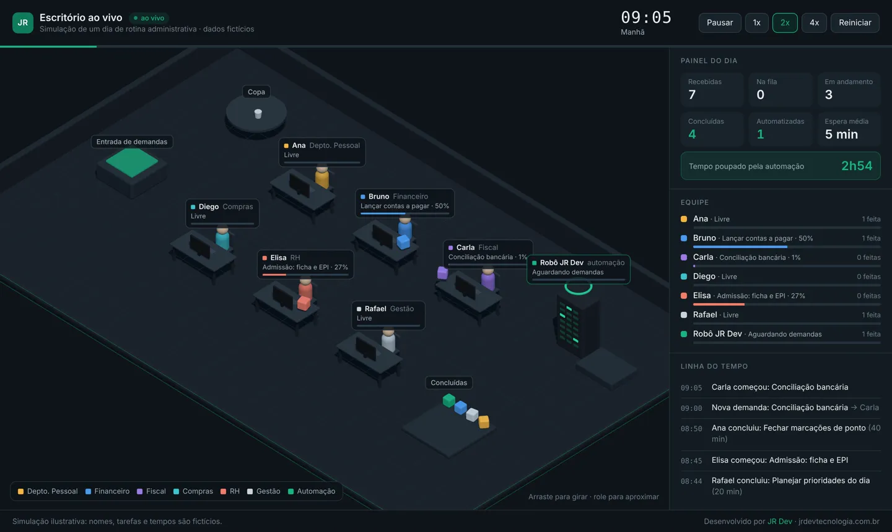
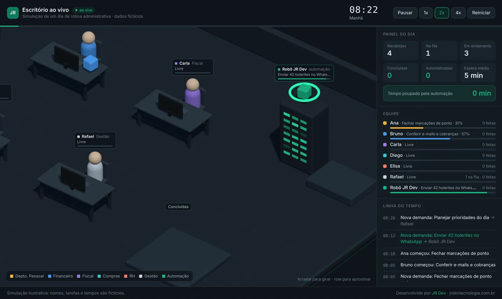
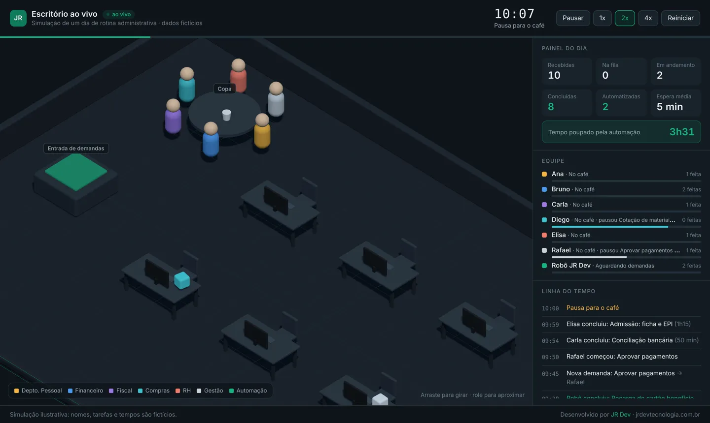
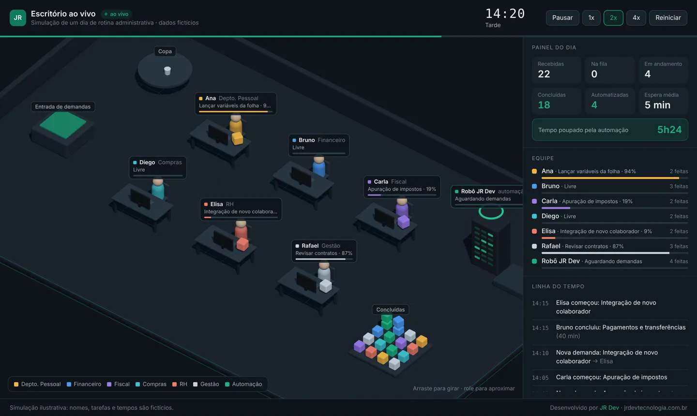
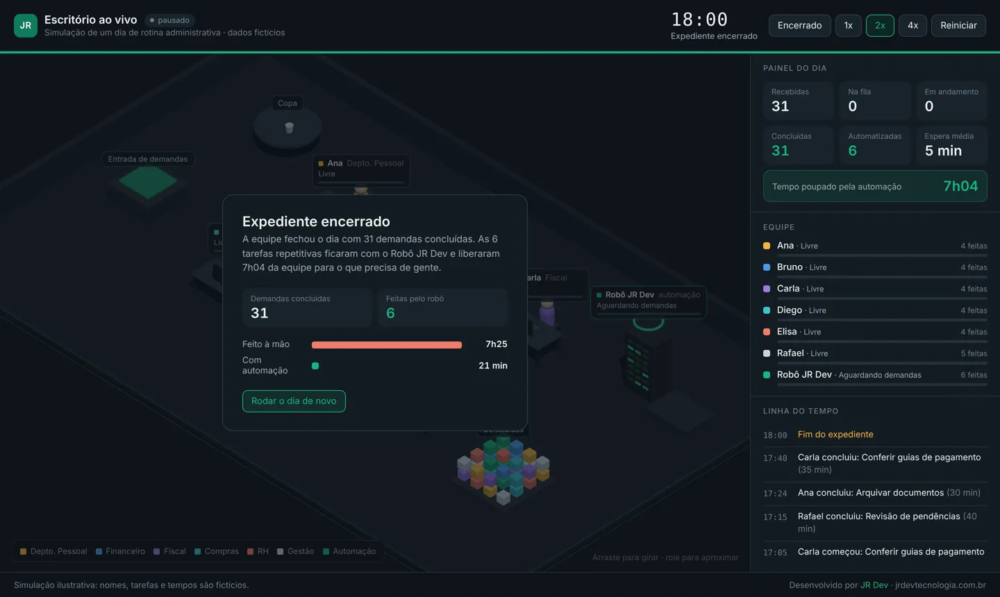

Voltar aos projetos
Simulação da JR Dev, 2026
Escritório ao vivo
Simulação 3D de um dia de rotina de RH e financeiro. Mostra, em tempo real, como a automação tira o trabalho repetitivo da equipe.
Mostrar o tempo que a automação devolve.
A ideia foi transformar um dia comum de um setor administrativo em algo que dá para ver: as demandas chegando, as filas andando e o que muda quando as tarefas repetitivas saem da mão da equipe.
A solução
Uma página única, que roda direto no navegador:
- um escritório em 3D (Three.js) com seis pessoas, cada uma de um setor: Depto. Pessoal, Financeiro, Fiscal, Compras, RH e Gestão;
- 31 demandas que chegam ao longo do dia, das 8h às 18h, entram na fila de cada pessoa, são processadas e vão para o arquivo de concluídas;
- pausas para o café e almoço, em que a equipe vai até a copa e o trabalho espera;
- um robô de automação que cuida das tarefas repetitivas, como enviar holerites e montar o relatório do dia;
- um painel com o relógio, as filas, a linha do tempo e o tempo poupado, com controles de pausa e velocidade.
O resultado
- O painel mostra, tarefa por tarefa, quanto tempo o robô poupa no dia simulado.
- Uma demonstração visual para explicar automação a quem não é da área.
Um dia, do começo ao fim.
Simulação ilustrativa: nomes, tarefas e tempos são fictícios.





Em vídeo
Como a simulação guarda o dia.
const T = (h,m)=>h*60+m;
const TASKS_DEF = [
[T(8,0),'bruno','Conferir e-mails e cobranças',30],
[T(8,5),'ana','Fechar marcações de ponto',40],
[T(8,12),'robo','Enviar 42 holerites no WhatsApp',6,180],
// ...
];function finishTask(w,t){
w.active=null; w.doneCount++; t.state='flyOut';
if(w.robot){
savedMin+=t.manual-t.dur; // tempo à mão menos o tempo do robô
feed(`Robô concluiu: ${t.title} em ${fmtD(t.dur)} (à mão levaria ${fmtD(t.manual)})`,'auto');
}
}